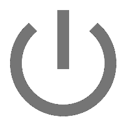

<link rel="import" href="../bower_components/iron-flex-layout/iron-flex-layout.html">
<link rel="import" href="../bower_components/iron-icons/social-icons.html">
<link rel="import" href="../bower_components/social-post-icons/social-post-icons.html">
<link rel="import" href="../bower_components/paper-icon-button/paper-icon-button.html">
<link rel="import" href="../bower_components/neon-animation/neon-animated-pages.html">
<link rel="import" href="../bower_components/neon-animation/neon-animatable.html">
<link rel="import" href="../bower_components/neon-animation/neon-animations.html">
<link rel="import" href="../bower_components/paper-tooltip/paper-tooltip.html">
<link rel="import" href="../bower_components/paper-styles/paper-styles.html">
<link rel="import" href="../bower_components/paper-icon-button/paper-icon-button.html">

<link rel="import" href="../components/main-grid.html">
<link rel="import" href="../components/timer-selection.html">
<link rel="import" href="../components/countdown-timer.html">

<dom-module id="auto-shutdown">

    <style>
        :host * {box-sizing: border-box;}

        :host {
            @apply(--layout-vertical);
            transition: background-color 500ms ease-out;
        }

        h1 {
            font-weight: 200;
        }

        #pages {
            z-index: 1;
        }

        neon-animatable > * {
            height: 100%;
            width: 100%;
        }

        .header {
            z-index: 2;
            height: 52px;
            padding: 6px;
            position: absolute;
            top: 0;
            left: 0;
            width: 100%;
        }

        .header .label {
            padding-left: 8px;
            font-size: 18px;
            font-weight: 200;
        }

        .back-button {
            position: absolute;
            top: 15px;
            left: 15px;
        }

        .info-content {
            text-align: center;
        }

        #info iron-icon {
            width: 36px;
            height: 36px;
        }

        #info a {
            color: inherit;
            text-decoration: none;
        }
    </style>

    <template>
        <div class="header layout horizontal" hidden$="{{hideHeader(selected)}}">
            <span class="flex">
                <h1 class="label">Ready to begin, select an option.</h1>
            </span>
            <paper-icon-button icon="icons:info-outline" on-click="info"></paper-icon-button>
        </div>
        <neon-animated-pages id="pages" class="layout vertical pages flex" selected="[[selected]]" entry-animation="scale-up-animation" exit-animation="scale-down-animation">
            <neon-animatable>
                <main-grid id="grid" primary-color="{{primaryColor}}" operation="{{operation}}"></main-grid>
            </neon-animatable>
            <neon-animatable>
                <timer-selection id="timers" primary-color="[[primaryColor]]" operation="[[operation]]"></timer-selection>
            </neon-animatable>
            <neon-animatable>
                <countdown-timer id="countdown" primary-color="[[primaryColor]]" operation="[[operation]]" seconds-left="[[secondsLeft]]"></countdown-timer>
            </neon-animatable>
            <neon-animatable>
                <div id="info" class="layout vertical center-center">
                    <paper-icon-button class="back-button" icon="arrow-back" on-click="back"></paper-icon-button>
                    <div class="info-content">
                        
                        <h1>Auto Shutdown v. <span>{{version}}</span></h1>
                        <a href="https://github.com/mccxiv/auto-shutdown" on-click="hrefClick">
                            <iron-icon icon="social-post:github"></iron-icon>
                            <paper-tooltip>GitHub Repository</paper-tooltip>
                        </a>
                        <a href="https://twitter.com/k3nt0456" on-click="hrefClick">
                            <iron-icon icon="social-post:twitter"></iron-icon>
                            <paper-tooltip>My Twitter</paper-tooltip>
                        </a>
                        <a href="http://mccxiv.me" on-click="hrefClick">
                            <iron-icon icon="social:public"></iron-icon>
                            <paper-tooltip>My Website</paper-tooltip>
                        </a>
                    </div>
                </div>
            </neon-animatable>
        </neon-animated-pages>
    </template>

    <script>
        var ipc = require('ipc');
        var shell = require('shell');

        Polymer({
            is: 'auto-shutdown',

            properties: {
                primaryColor: {observer: 'primaryColorHandler'},
                selected: {value: 0},
                version: {value: ''}
            },

            ready: function() {
                var app = this;
                var grid = app.$.grid;
                var timerSelection = app.$.timers;
                var countdownTimer = app.$.countdown;

                ipc.send('version?');
                ipc.once('version', function(version) {
                    app.version = version;
                });

                ipc.on('seconds-left', function(seconds) {
                    app.secondsLeft = seconds;
                    if (seconds) setTimeout(app.requestSecondsLeft, 500);
                });

                grid.addEventListener('operation', function() {
                    var timerPages = ['shutdown', 'restart', 'hibernate'];
                    if (timerPages.indexOf(app.operation) > -1) app.selected = 1;
                    else if (app.operation === 'info') app.selected = 3;
                });

                timerSelection.addEventListener('timer', function(e) {
                    app.startOperation(app.operation, e.detail);
                    app.selected = 2;
                });

                timerSelection.addEventListener('back', this.back.bind(this));

                countdownTimer.addEventListener('cancel', function() {
                    ipc.send('cancel');
                    app.selected = 1;
                });
            },

            primaryColorHandler: function() {
                this.style.backgroundColor = this.primaryColor;
            },

            startOperation: function (operation, seconds) {
                ipc.send(operation, seconds);
                this.requestSecondsLeft();
            },

            requestSecondsLeft: function() {
                ipc.send('seconds-left?');
            },

            hideHeader: function(selected) {
                return !!selected;
            },

            back: function() {
                this.selected = 0;
                this.set('primaryColor', 'white');
            },

            info: function() {
                this.selected = 3;
            },

            hrefClick: function(event) {
                event.preventDefault();
                var url = event.currentTarget.getAttribute('href');
                shell.openExternal(url);
            }
        });
    </script>

</dom-module>